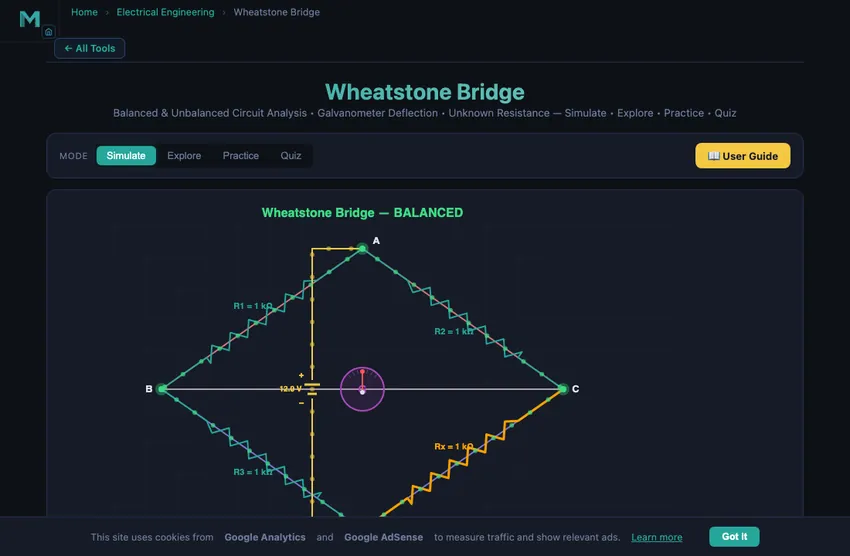

Wheatstone Bridge Simulator & Calculator
Balanced & Unbalanced Circuit Analysis • Galvanometer Deflection • Unknown Resistance — Simulate • Explore • Practice • Quiz
1 Overview
The Wheatstone Bridge Simulator lets you explore one of the most important resistance measurement circuits in electrical engineering. The bridge consists of four resistors arranged in a diamond configuration with a voltage source across one diagonal and a galvanometer across the other. When the bridge reaches the null condition (R1/R2 = R3/Rx), no current flows through the galvanometer and the unknown resistance can be calculated as Rx = R2 × R3 / R1.
This simulator is designed for electrical engineering students, instrumentation trainees, and physics learners studying balanced bridge circuits, galvanometer deflection, sensitivity analysis, and precision resistance measurement techniques.
2 Building the Circuit
The simulator opens in Simulate mode with all four arms at 1000 Ω and Vsupply = 12 V — a perfectly balanced bridge with zero galvanometer current. To begin:
- Drag the Rx slider away from 1000 Ω to unbalance the bridge and observe galvanometer deflection on the canvas.
- Adjust R1, R2, and R3 to set known resistor values, then find the value of Rx that brings the bridge back to balance.
- Change the V Supply slider (1–24 V) to see how supply voltage affects galvanometer current without changing the balance point.
- Enable Auto-Balance Mode or click the Auto-Balance button to let the simulator automatically find the Rx value that balances the bridge.
- Try Presets: Equal Arms, Unbalanced, Strain Gauge, or High Voltage configurations.
3 Energising the Circuit
Simulate mode provides the full interactive bridge workspace. The canvas shows the diamond circuit with animated current flow, galvanometer needle deflection, and branch current indicators. Key controls:
- R1, R2, R3, Rx sliders (1–10,000 Ω): Set the four arm resistances. The balance condition is R1 × Rx = R2 × R3.
- V Supply slider (1–24 V): Sets the source voltage. Higher voltage increases galvanometer sensitivity but does not change the balance point.
- Show Galvanometer Deflection: Toggles the animated galvanometer needle that shows the direction and magnitude of bridge imbalance.
- Auto-Balance Mode: Automatically adjusts Rx to achieve zero galvanometer current.
The readout cards display: calculated Rx, bridge voltage (potential difference across the galvanometer), galvanometer current, balance status (Balanced/Unbalanced), and bridge sensitivity (change in galvanometer current per ohm of resistance change).
4 Circuit Theory
Explore mode presents bridge theory in three categories:
- Bridge Basics: Covers the Wheatstone bridge circuit topology, the balance equation (R1/R2 = R3/Rx), and why the null-detection method is more accurate than direct measurement.
- Analysis Methods: Explains Thevenin equivalent analysis of the bridge circuit, sensitivity calculations, and the effect of galvanometer internal resistance on measurement accuracy.
- Applications: Describes strain gauge bridges (detecting resistance changes as small as 0.01%), temperature measurement with RTDs, the Kelvin double bridge for low-resistance measurement, and industrial load cells.
Each concept card includes formulas, diagrams, and practical engineering context.
5 Try a Problem
Practice mode generates problems such as: “A Wheatstone bridge has R1 = 500 Ω, R2 = 1000 Ω, R3 = 750 Ω. Find the unknown resistance Rx for balance”, “Calculate the bridge voltage when all arms are 1 kΩ except Rx = 1.1 kΩ with a 10 V supply”, or “Determine the galvanometer current for a given imbalance.” Enter your answer and receive step-by-step feedback.
Quiz mode tests your understanding with 5 multiple-choice questions covering the balance condition, unknown resistance calculation, sensitivity, Thevenin equivalents, and practical applications. Review explanations for each answer at the end.
6 Field Tips
- The bridge balance point depends only on the ratio of resistances, not on the supply voltage. Increasing voltage improves sensitivity but does not change where balance occurs.
- Maximum sensitivity occurs when all four arms have equal resistance. Try setting R1 = R2 = R3 = Rx = 1000 Ω and then making small changes to Rx.
- In practice, the null-detection method is highly accurate because it does not depend on the galvanometer’s calibration — you only need to detect zero current.
- Use the Strain Gauge preset to simulate how tiny resistance changes (a few ohms) create measurable galvanometer deflection.
- Remember: Rx = R2 × R3 / R1. If you know any three resistors and the bridge is balanced, you can find the fourth.
- The bridge voltage formula is Vbridge = Vs × (R3/(R1+R3) − Rx/(R2+Rx)). Practise this in Practice mode.
- For strain gauge applications, the resistance change is typically <1%, so high supply voltage and a sensitive galvanometer are essential.
Understanding the Wheatstone Bridge — Free Interactive Circuit Simulator

The Wheatstone bridge is one of the most important measurement circuits in electrical engineering. Invented by Samuel Hunter Christie in 1833 and later popularized by Sir Charles Wheatstone, it provides an extremely accurate method for measuring unknown resistances. The bridge consists of four resistors arranged in a diamond (or square) configuration with a voltage source across one diagonal and a galvanometer across the other. When the bridge is balanced — meaning R1/R2 = R3/Rx — no current flows through the galvanometer and the unknown resistance can be calculated as Rx = R2 × R3 / R1. This null-detection method is independent of the galvanometer’s sensitivity or calibration, making it far more accurate than direct measurement methods.
How the Wheatstone Bridge Works
The bridge circuit divides the supply voltage into two voltage dividers connected in parallel. The top divider consists of R1 and R3, while the bottom divider consists of R2 and Rx. The galvanometer measures the potential difference between the midpoints of these two dividers. When the voltage at both midpoints is equal, the bridge is balanced and the galvanometer reads zero. The bridge voltage is calculated as V_bridge = V_s × (R3/(R1+R3) − Rx/(R2+Rx)). Any imbalance causes current to flow through the galvanometer, with the direction indicating whether Rx is too high or too low.
Applications of the Wheatstone Bridge
Wheatstone bridges are used extensively in strain gauge measurements, where tiny resistance changes (as small as 0.01%) must be detected accurately. Temperature sensors, pressure transducers, and load cells all use bridge configurations. The Kelvin double bridge extends the concept to measure very low resistances (below 1 ohm) by eliminating lead and contact resistance errors. In laboratory settings, the meter bridge (slide-wire bridge) and post office box are practical implementations of the Wheatstone bridge principle.
Why a 200-Year-Old Circuit Still Dominates Sensor Electronics
Christie’s bridge from 1833 is unchanged in concept in every modern strain gauge, every load cell, every pressure transducer in industrial measurement. The reason is fundamental: the bridge measures small changes against a balanced reference rather than absolute values. The reference point is provided by three known resistors; the unknown is the change in the fourth. Because the bridge output depends only on the imbalance, the supply voltage drift cancels, the amplifier offset cancels, and the measurement isolates just the variable of interest.
A typical strain gauge has resistance change of about 0.1% for a strain of 1000 microstrain. Direct measurement: try to detect 0.12 Ω change in a 120 Ω resistor — you need a 4-digit ohmmeter and you fight noise. Bridge measurement: the 0.1% change produces a bridge output of about 1 mV on a 1 V excitation. Amplify the bridge output and the signal-to-noise ratio is excellent. This is why every strain measurement — from concrete bridge monitoring to wind-tunnel force balances — uses a Wheatstone bridge.
Strain Gauge Bridge Configurations
- Quarter bridge. One active gauge, three fixed reference resistors. Cheapest and simplest; measures strain in one direction only. Temperature variations show up as apparent strain.
- Half bridge. Two active gauges in adjacent arms. Common implementation: one gauge measures strain, another nearby gauge measures only temperature, so the temperature term cancels in the bridge output. Output sensitivity doubles vs quarter bridge.
- Full bridge. Four active gauges, two in tension, two in compression. Output sensitivity quadruples. Temperature cancels. This is the standard configuration in load cells and pressure transducers.
References
- Sedra & Smith — Microelectronic Circuits, 8th ed., for analogue front-end design around the bridge.
- Window, A. L. — Strain Gauge Technology, 2nd ed. The reference for bridge-based strain measurement.
- HBM, Vishay Micro-Measurements — manufacturer application notes are uniformly excellent for practical bridge design.
Explore Related Simulators
If you found this Wheatstone Bridge simulator helpful, explore our Ohm’s Law simulator, RC Circuit simulator, RLC Circuit simulator, Transformer simulator, Star-Delta Conversion simulator, and the House Wiring Simulator, and the Thermocouple Simulator for more hands-on practice.